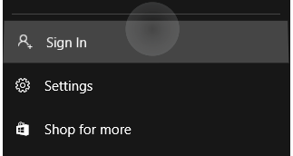
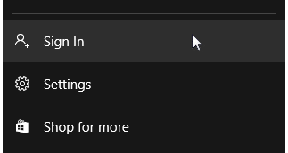
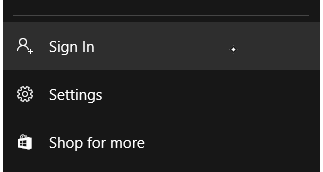
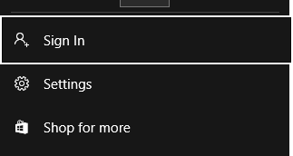
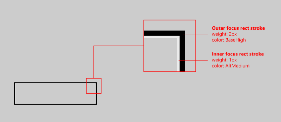
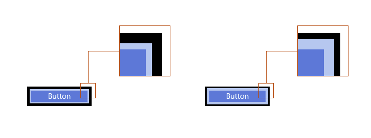
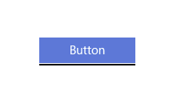
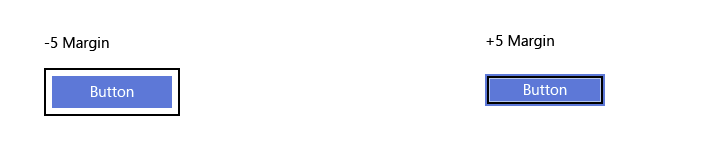
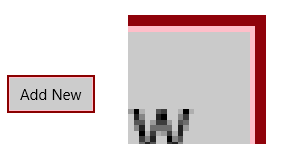

Guidelines for visual feedback
Use visual feedback to show users when their interactions are detected, interpreted, and handled. Visual feedback can help users by encouraging interaction. It indicates the success of an interaction, which improves the user's sense of control. It also relays system status and reduces errors.
Important APIs: Windows.Devices.Input, Windows.UI.Input, Windows.UI.Core
Recommendations
- Try to limit modifications of a control template to those directly related to your design intent, as extensive changes can impact the performance and accessibility of both the control and your application.
- See XAML styles for more info on customizing the properties of a control, including visual state properties.
- See the UserControl Class for details on making changes to a control template
- Consider creating your own custom templated control if you need to make significant changes to a control template. For an example of a custom templated control, see the Custom Edit Control sample.
- Don't use touch visualizations in situations where they might interfere with the use of the app. For more info, see ShowGestureFeedback.
- Don't display feedback unless it is absolutely necessary. Keep the UI clean and uncluttered by not showing visual feedback unless you are adding value that is not available elsewhere.
- Try not to dramatically customize the visual feedback behaviors of the built-in Windows gestures, as this can create an inconsistent and confusing user experience.
Additional usage guidance
Contact visualizations are especially critical for touch interactions that require accuracy and precision. For example, your app should clearly indicate the location of a tap to let a user know if they missed their target, how much they missed it by, and what adjustments they must make.
Using the default XAML platform controls available ensures that your app works correctly on all devices and in all input situations. If your app features custom interactions that require customized feedback, you should ensure the feedback is appropriate, spans input devices, and doesn't distract a user from their task. This can be a particular issue in game or drawing apps, where the visual feedback might conflict with or obscure critical UI.
Important
We don't recommend changing the interaction behavior of the built-in gestures.
Feedback Across Devices
Visual feedback is generally dependent on the input device (touch, touchpad, mouse, pen/stylus, keyboard, and so on). For example, the built-in feedback for a mouse usually involves moving and changing the cursor, while touch and pen require contact visualizations, and keyboard input and navigation uses focus rectangles and highlighting.
Use ShowGestureFeedback to set feedback behavior for the platform gestures.
If customizing feedback UI, ensure you provide feedback that supports, and is suitable for, all input modes.
Here are some examples of built-in contact visualizations in Windows.
 |
 |
 |
 |
|---|---|---|---|
| Touch visualization | Mouse/touchpad visualization | Pen visualization | Keyboard visualization |
High Visibility Focus Visuals
All Windows apps sport a more defined focus visual around interactable controls within the application. These new focus visuals are fully customizable as well as disableable when needed.
For the 10-foot experience typical of Xbox and TV usage, Windows supports Reveal focus, a lighting effect that animates the border of focusable elements, such as a button, when they get focus through gamepad or keyboard input.
Color Branding & Customizing
Border Properties
There are two parts to the high visibility focus visuals: the primary border and the secondary border. The primary border is 2px thick, and runs around the outside of the secondary border. The secondary border is 1px thick and runs around the inside of the primary border.

To change the thickness of either border type (primary or secondary) use the FocusVisualPrimaryThickness or FocusVisualSecondaryThickness, respectively:
<Slider Width="200" FocusVisualPrimaryThickness="5" FocusVisualSecondaryThickness="2"/>

The margin is a property of type Thickness, and therefore the margin can be customized to appear only on certain sides of the control. See below:

The margin is the space between the control's visual bounds and the start of the focus visuals secondary border. The default margin is 1px away from the control bounds. You can edit this margin on a per-control basis, by changing the FocusVisualMargin property:
<Slider Width="200" FocusVisualMargin="-5"/>

A negative margin will push the border away from the center of the control, and a positive margin will move the border closer to the center of the control.
To turn off focus visuals on the control entirely, simply disabled UseSystemFocusVisuals:
<Slider Width="200" UseSystemFocusVisuals="False"/>
The thickness, margin, or whether or not the app-developer wishes to have the focus visuals at all, is determined on a per-control basis.
Color Properties
There are only two color properties for the focus visuals: the primary border color, and the secondary border color. These focus visual border colors can be changed per-control on a page level, and globally on an app-wide level:
To brand focus visuals app-wide, override the system brushes:
<SolidColorBrush x:Key="SystemControlFocusVisualPrimaryBrush" Color="DarkRed"/>
<SolidColorBrush x:Key="SystemControlFocusVisualSecondaryBrush" Color="Pink"/>

To change the colors on a per-control basis, just edit the focus visual properties on the desired control:
<Slider Width="200" FocusVisualPrimaryBrush="DarkRed" FocusVisualSecondaryBrush="Pink"/>